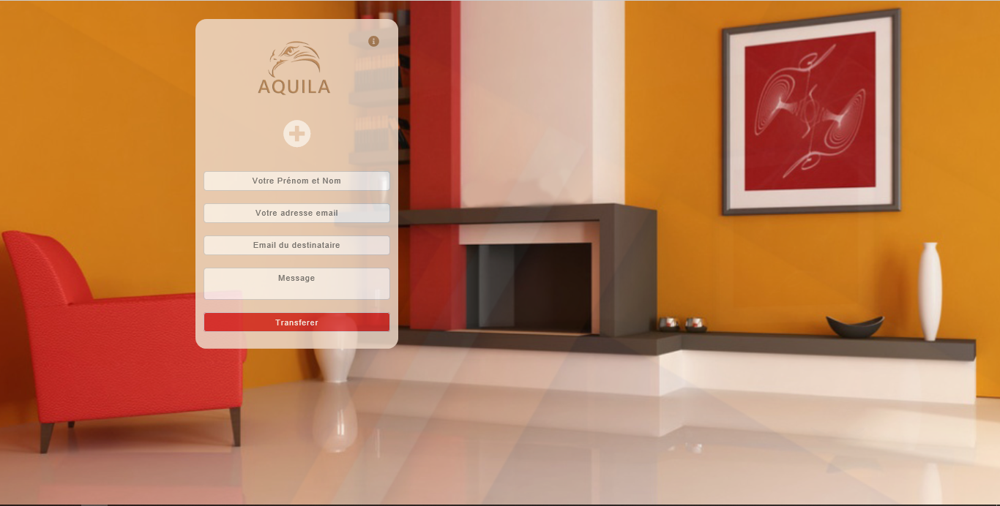

<more-option [title]="title"></more-option>

<ion-content padding>
  
  <ion-card padding class="card" *ngFor="let article of articles | async">
    <!--  -->
    <ion-card-content>
      <ion-card-title>{{ article.title }}</ion-card-title>
      <p>{{ article.content }}</p>
      <button ion-button (click)="goToArticle(article.id)" full>voir l'article</button>
    </ion-card-content>
  </ion-card>

  </ion-content>